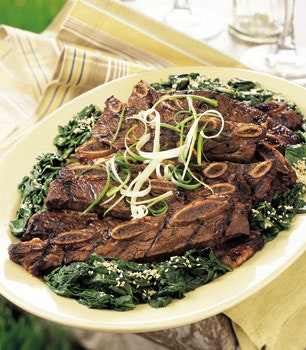

Grilled Korean Short Ribs

Ribs on a Platter, Surrounded with Chopped Spinach.
In a Korean home or restaurant, grilled ribs (kalbi kui) would be accompanied by the spicy pickled cabbage called kimchi. It's available in the refrigerated foods section of some supermarkets and at Korean and Asian markets. For the ribs, have the butcher cut the flanken across the bones into 1/3- to 1/2-inch-thick pieces. Begin marinating the ribs one day ahead. What to drink: Asian lager.
Ingredients
Sesame Spinach
- 1/4 cup sesame seeds
- 5 large (8- to 9-ounce) bunches fresh spinach, stem ends and roots trimmed, rinsed well
- 4 teaspoons oriental sesame oil
- 1 tablespoon unseasoned rice vinegar
- 1/4 teaspoon hot pepper sauce
Short Ribs
- 1 cup soy sauce
- 1/2 cupmirin (sweet Japanese rice wine) or sweet Sherry
- 1/2 cup (packed) dark brown sugar
- 1/4 cup unseasoned rice vinegar
- 1/4 cup oriental sesame oil
- 1/4 cup minced garlic (about 15 cloves)
- 2 large green onions, chopped
- 5 pounds Korean-style short ribs (beef chuck flanken, cut 1/3 to 1/2 inch thick across bones; about 20 pieces)
Directions
Make Spinach
- Place sesame seeds in heavy skillet; sprinkle lightly with salt. Stir over medium heat until seeds are light golden, about 6 minutes. Set aside.
- Line large colander with kitchen towel. Pack spinach, with water still clinging to leaves, into heavy large pot. Cook over high heat until wilted but still bright green, turning spinach with tongs for even cooking, about 4 minutes. Transfer spinach to prepared colander. Cool slightly. Wrap towel around spinach and squeeze out as much moisture as possible. Transfer spinach to work surface and chop coarsely. Place in medium bowl. Add sesame oil, vinegar, and hot pepper sauce. Toss to blend evenly. Season to taste with salt and pepper. Sprinkle with sesame seeds. (Can be prepared 2 hours ahead. Let stand at room temperature.)
Make Ribs
- Combine first 7 ingredients in medium bowl; whisk to blend well. Pour into heavy jumbo resealable plastic bag. Add ribs; seal bag. Turn bag over several times to coat ribs evenly. Refrigerate overnight, turning bag occasionally.
- Prepare barbecue (medium-high heat). Drain ribs; discard marinade. Working in batches, grill ribs until browned and cooked to medium-rare, about 3 minutes per side. Mound ribs on platter; surround with chopped spinach and serve.